当前本地功能已实装。147 项领域与任务测试通过，21 个不同 UI 用例各有分组通过记录，Release 构建通过。以下均为原生模拟器截图与实际控件操作录像。导入 / 纠正是隔离设计状态；真机视觉、手感和帧耗时尚未验收。
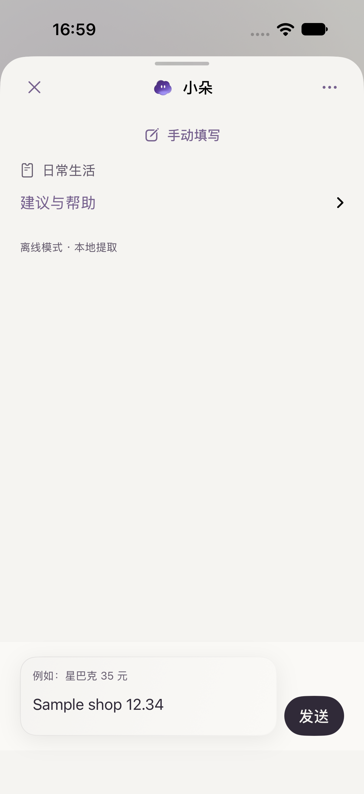
iPhone 18 Pro · iOS 27；由手动切入，当前字段连续保留。
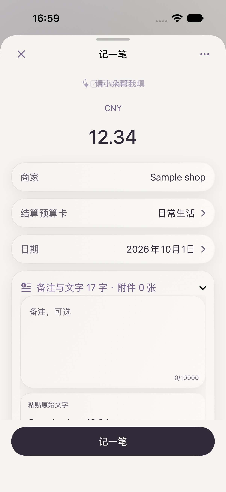
同一面板切回，金额、商家与归属保留；正文与固定操作区裁切已修正。
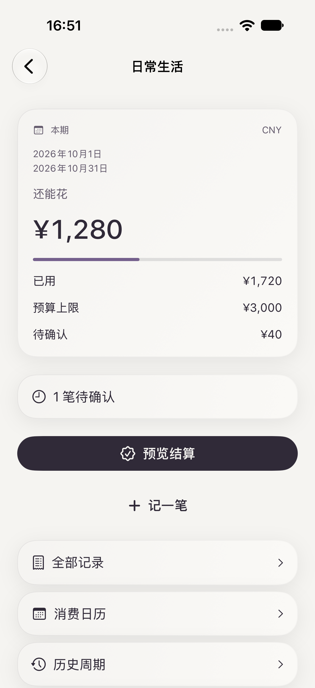
本期状态与主要行动集中；根底栏隐藏。
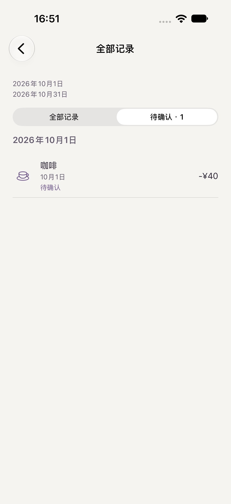
从概览进入记录，保持筛选上下文。
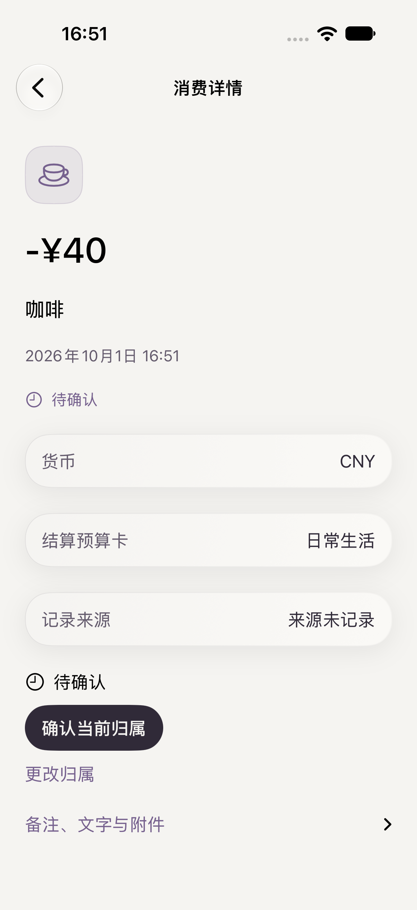
金额、币种、日期、归属、来源和状态明确。
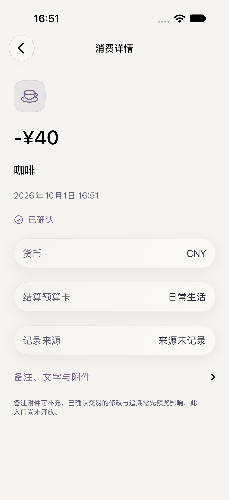
已执行确认操作；返回后仍保留原筛选。
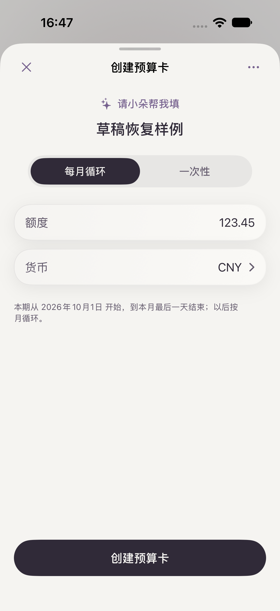
正式本机草稿重启后名称和额度仍在，未提交账本。
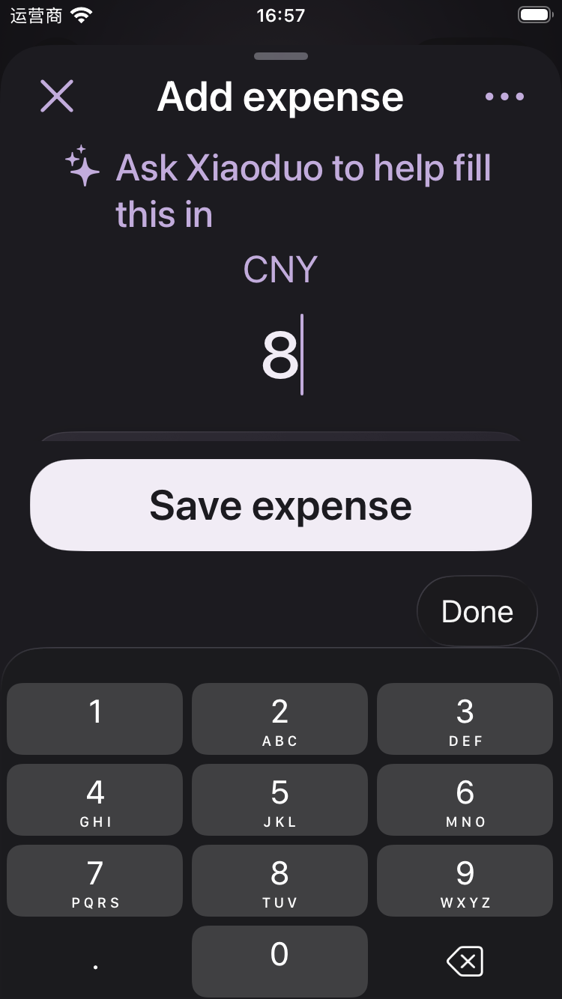
iPhone SE 3 · iOS 26.5 · accessibility-medium；数字键盘、Done 与保存可达。
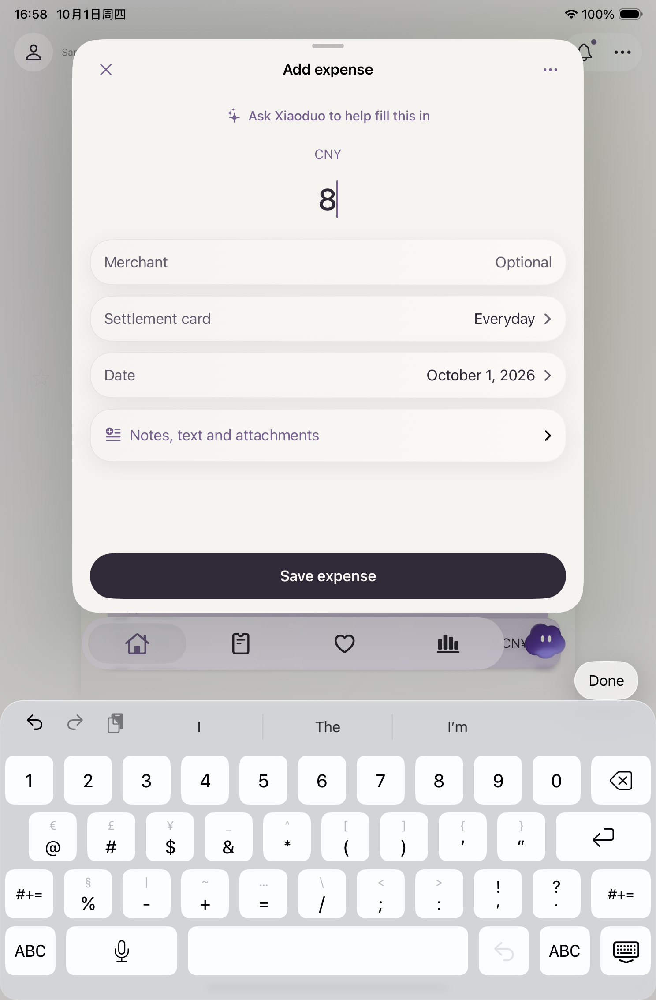
iPad mini · iOS 26.5；金额键盘和 Done，不使用遮挡保存的浮动数字键盘。
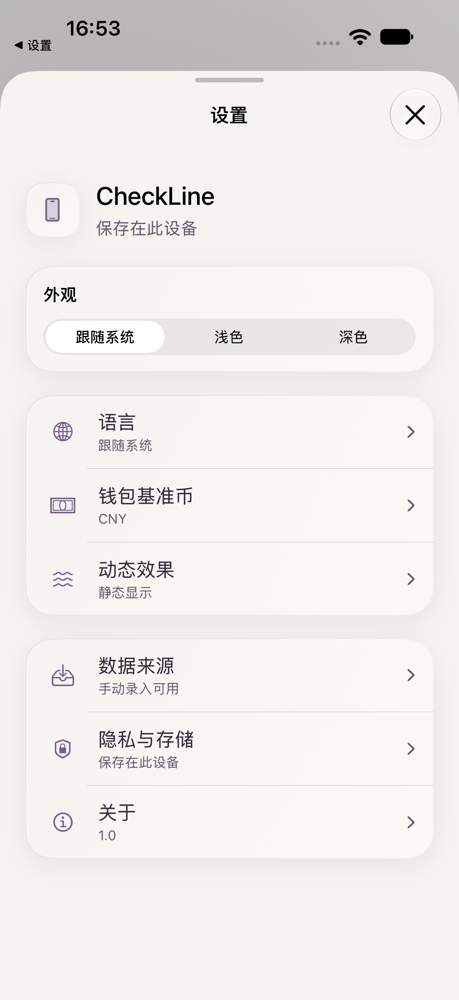
真实系统设置开关；返回 App 的输入、切换与保存通过。
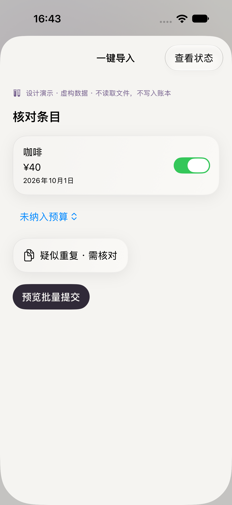
只有设计状态，不解析真实来源，不写用户账本。
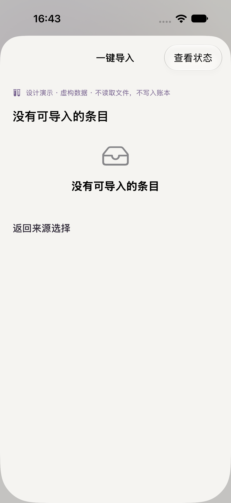
没有示例项时提供返回 / 重选入口。
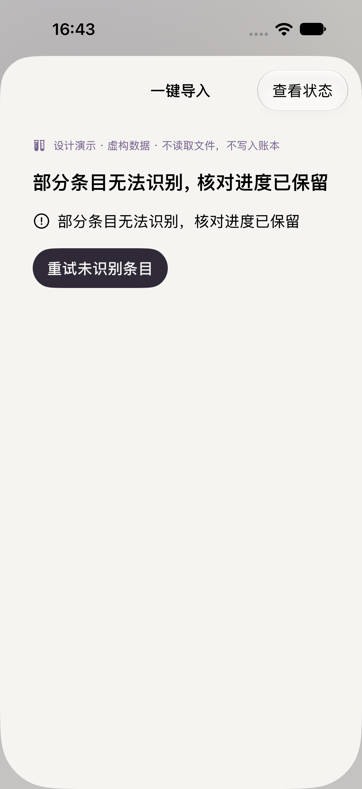
失败保留当前核对上下文，可重试。
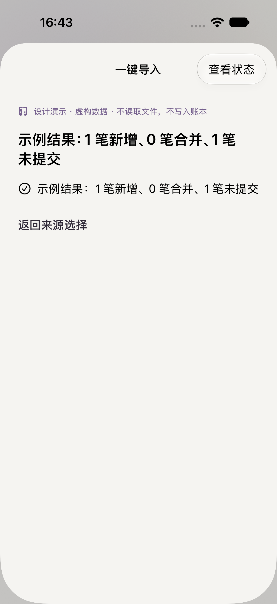
明确演示结果，未产生正式消费。
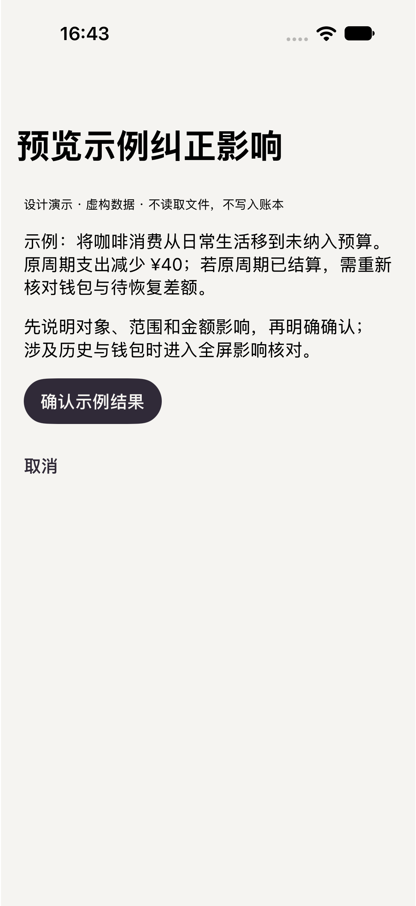
新增管理操作的全屏状态契约，未接通真实纠正提交。
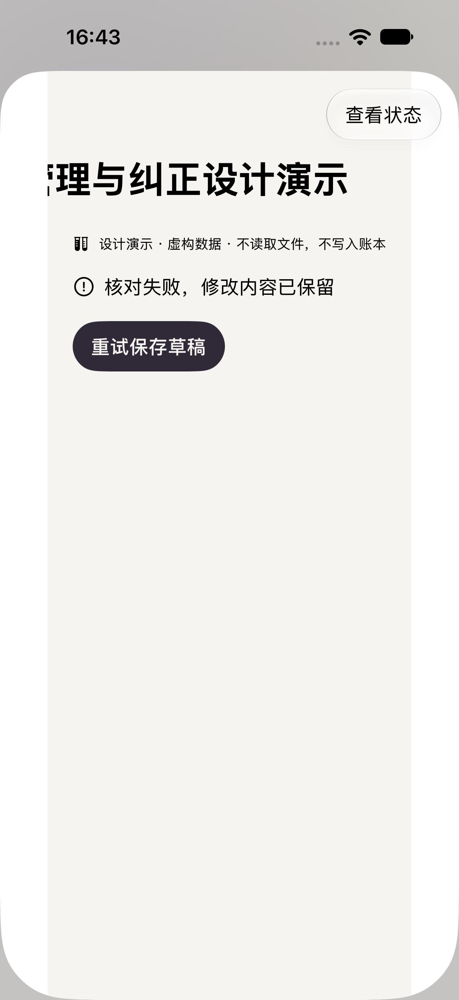
可退回核对与重试，仍不写账本。
保持原速，仅裁去等待。实际确认动作由最新截图与专项测试证明。
真实系统开关操作。录制早于最后正文裁切修正，行为未变。
逐用例 / 设备证据 · 实际 VoiceOver 朗读 · 录屏裁切来源 · 完整实施与验证记录